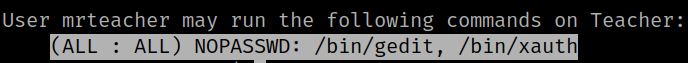

5.1 See sudoers
1. “mrteacher's” privileges.
$sudo -lOutput:

This user can run “/bin/gedit, /bin/xauth” with no password.
2. You can get info about “xauth” at https://www.thegeekdiary.com/how-to-set-x11-forwarding-export-remote-display-for-users-who-switch-accounts-using-sudo/.